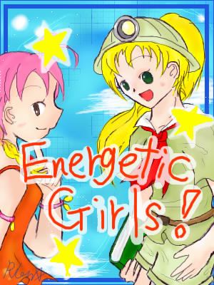

やりこみ攻略さまの復活祝いに描き描きしたもの。クリスとピンキーの擬人化です。
元気いっぱいな女の子…をイメージしてみたのですが、なんだか上手くいかず（苦笑。
二人とも、擬人化のデザインがちょっぴり変わりました＾＾
ちなみに、パレッタ擬人化のイラストと同じ空をイメージしています。
一応、同じ世界ということで＾＾*
雲を同じように表現できなくて死にましたorz
女の子二人、ということでとっても描くのが楽しかったですｖ